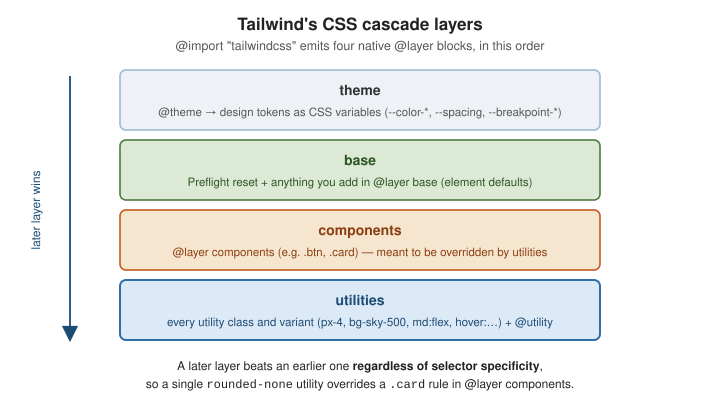

Customization and Configuration
|
This content was generated with the assistance of AI and should be verified against the official documentation before being relied on in production. |
In v4 there is no tailwind.config.js by default — the whole framework is configured in CSS. You
@import "tailwindcss" and then use a handful of at-rules (@theme, @utility, @custom-variant,
@plugin, @source) in the same stylesheet. See
Functions and Directives and
Theme Variables.
The build and scan pipeline
Tailwind never ships a giant stylesheet you trim down. It reads your source files as plain text, extracts anything that looks like a class name, generates CSS only for the ones it recognises, and (in a production build) minifies the result.
HTML / JS / JSX / Vue"] --> B["Scan for
class-name tokens"] C["@import tailwindcss
@theme / @utility / @source"] --> D["Tailwind engine"] B --> D D --> E["Generate CSS for
matched utilities + variants"] E --> F["Minified stylesheet
for the browser"]
Detecting classes in source files
Detection is automatic and .gitignore-aware; node_modules, binary files, CSS files, and lock files are
skipped. The one hard rule: a class must appear as a complete, unbroken string — Tailwind does not evaluate
a constructed name like text-$\{color}-500. Map props to whole class names instead. This also applies to
multi-class strings: each class in class="px-4 py-2 bg-sky-500" is detected individually and must appear
complete in the source, never as concatenated fragments.
@import "tailwindcss";
/* scan an external package that ships Tailwind classes */
@source "../node_modules/@acme/ui";
/* exclude a folder */
@source not "../src/legacy";
/* force-generate classes that never appear literally in source */
@source inline("underline");
@source inline("{hover:,focus:,}bg-sky-{500,600,700}");To turn off automatic detection and register every path yourself (monorepos):
@import "tailwindcss" source(none);
@source "../app";
@source "../../packages/ui/src";Plugins
@import "tailwindcss";
@plugin "@tailwindcss/typography";
@plugin "@tailwindcss/forms";
@plugin "./plugins/my-plugin.js"; /* a JS plugin still works */Using a legacy JavaScript config
An existing v3 config can be loaded explicitly:
@import "tailwindcss";
@config "../tailwind.config.js";// tailwind.config.js -- still read via @config
module.exports = {
theme: { extend: { colors: { brand: "#3f3cbb" } } },
plugins: [require("@tailwindcss/typography")],
};v4 does not support the corePlugins, safelist, or separator keys, and content is replaced by
@source. Prefer moving the theme into @theme over time.
The prefix option
@import "tailwindcss" prefix(tw);<div class="tw:flex tw:items-center tw:hover:bg-black tw:md:p-4">…</div>The prefix is written once, at the very front of the class, followed by any variants: tw:hover:bg-black, not
tw:hover:tw:bg-black (that form generates nothing). The theme variables are emitted with the prefix as well — for
example --tw-spacing instead of --spacing — so hand-written CSS that reads a theme variable must use the prefixed
name.
Functions in custom CSS
.card {
padding: --spacing(6); /* calc(var(--spacing) * 6) */
background: --alpha(var(--color-slate-900) / 10%); /* color-mix(… 10%, transparent) */
}
@media (width >= theme(--breakpoint-xl)) { /* … */ }The old theme(spacing.6) dot-notation still works but is deprecated — reference the CSS variable
(var(--color-slate-900)) or, for media queries, theme(--breakpoint-xl).
Deep dive: configuring the Acme project
A small project needs very little configuration, and it helps to know where each decision lives. The Acme page from Building a Page with Utilities ends up with one stylesheet that answers five questions, each with its own at-rule:
@import "tailwindcss";
/* what the design looks like */
@theme {
--color-brand: oklch(0.55 0.2 264);
--font-display: "Satoshi", ui-sans-serif, sans-serif;
}
/* which files contain classes: the build output of the CMS, plus two always-on states */
@source "../cms-export";
@source inline("{hover:,}bg-sky-{500,600}");
/* how plain elements look */
@layer base {
a { color: var(--color-sky-700); }
h1, h2 { text-wrap: balance; }
}
/* a reusable class for markup that cannot carry utilities */
@layer components {
.card { @apply rounded-xl border border-gray-200 p-6; }
}Compiling this with a template that uses hover:bg-sky-500 and hover:bg-sky-600 confirms the brace expansion: the
@source inline() line forces bg-sky-500, bg-sky-600, hover:bg-sky-500 and hover:bg-sky-600 into the output
even when no file mentions them, which is what you want for colours chosen by an editor at runtime.
Writing a plugin
When the same behaviour is needed in several projects, package it as a plugin and load it with @plugin. A plugin
is a JavaScript function that receives helpers for adding base styles, components, utilities and variants; it is the
only place in v4 where JavaScript participates in configuration.
// acme-plugin.js
const plugin = require("tailwindcss/plugin");
module.exports = plugin(function ({ addBase, addComponents, matchUtilities, addVariant }) {
// base styles, emitted in @layer base
addBase({ "h1, h2": { textWrap: "balance" } });
// a component class, emitted in @layer components
addComponents({ ".btn-acme": { borderRadius: "0.375rem", fontWeight: "600" } });
// a functional utility: glow-soft, glow-strong
matchUtilities(
{ glow: (value) => ({ textShadow: `0 1px 2px ${value}` }) },
{ values: { soft: "rgb(0 0 0 / 0.2)", strong: "rgb(0 0 0 / 0.6)" } },
);
// a variant: hocus:underline
addVariant("hocus", ["&:hover", "&:focus-visible"]);
});@import "tailwindcss";
@plugin "./acme-plugin.js";A template using glow-soft hocus:underline btn-acme compiles to text-shadow: 0 1px 2px rgb(0 0 0 / 0.2), a
.hocus\:underline:hover, .hocus\:underline:focus-visible rule, and the component rule. Most things a v3 plugin did can
now be written in CSS (@utility, @custom-variant, @theme), so reach for @plugin only when you need logic that
CSS cannot express, or when you are using a published plugin such as @tailwindcss/typography.
Choosing where a customization lives
| You want | Use | Because |
|---|---|---|
A new colour, font, radius, breakpoint |
|
it also becomes utilities and a CSS variable |
A one-off class with variants support |
|
|
A new state or media condition |
|
it composes with every other variant |
Styles for elements you do not control |
|
the markup cannot carry utilities |
A repeated card or button in your own markup |
a framework component |
the class list stays visible and the pieces stay overridable |
Behaviour that needs JavaScript at build time |
|
CSS alone cannot express it |
The cascade-layer model

Because utilities is the last layer, a single utility class overrides a more specific rule you wrote in
@layer components — which is exactly why component classes stay overridable by utilities. Anything outside a
layer still beats everything inside one, so unlayered custom CSS always wins.
Related pages
-
Theme Variables and Colors — the
@themedirective and every theme-variable namespace. -
Custom Styles and Arbitrary Values —
@utility,@custom-variant,@apply, and@reference. -
Build and Production — wiring the scan/build step into Vite, PostCSS, or the CLI.
-
CSS Custom Properties and Media Queries — CSS custom properties and
@mediain plain CSS.